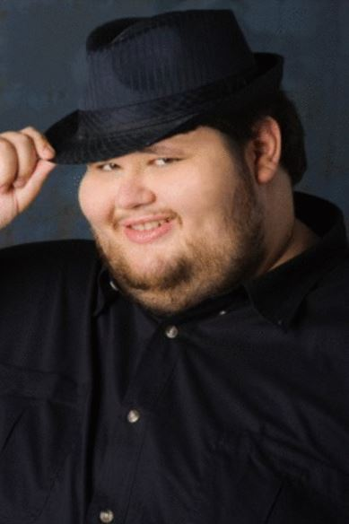

“Tips Fedora” is an online expression used in mocking response to a statement of opinion thought to be held by a young adult male who probably wears fedora as a fashion accessory. The phrase refers to the gesture of tipping one’s hat as an expression of recognition or acknowledgement between two persons. One of the most well-known “fedora tipping” reaction images is based on a headshot of Jerry Messing, an American actor best known for portraying Pugsley Addams in the 1998 comedy film Addams Family Reunion, originally uploaded to his Facebook profile on May 1st, 2011.
